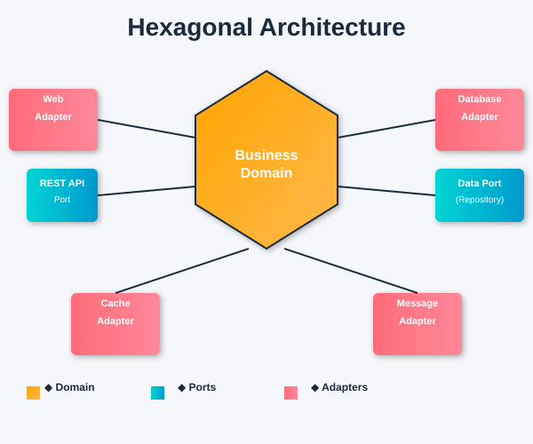

Patrones Arquitectónicos Modernos
¿Por qué los patrones importan?
Los patrones arquitectónicos modernos resuelven problemas complejos que emergen en sistemas grandes: separación de responsabilidades, testabilidad, escalabilidad y mantenimiento de largo plazo. No son caprichos académicos; son respuestas pragmáticas a desafíos reales del desarrollo empresarial.
Coste vs Beneficio: Cada patrón introduce complejidad inicial (onboarding, tooling, overhead). La decisión correcta depende de:
- Tamaño del equipo: ¿Puedo coordinar 50+ personas sin conflictos?
- Requisitos de rendimiento: ¿Necesito 1M de requests/seg o 1K?
- Velocidad vs mantenibilidad: ¿MVP en 2 meses o producto de 5 años?
Clean Architecture
Concepto: Aislar la lógica de negocio (dominio) del framework, base de datos, UI y sistemas externos. Dependencias siempre apuntan hacia adentro.
Estructura de capas (de dentro a fuera):
- Entities: Objetos core del negocio sin dependencias externas
- Use Cases: Lógica de aplicación, orquestación de entidades
- Interface Adapters: Controladores, presentadores, gateways
- Frameworks & Drivers: Web, DB, UI, librerías
Visualización — Capas de Clean Architecture:
Ejemplo práctico — Servicio de Suscripciones:
// Entities (dominio puro, sin dependencias)
class Subscription {
constructor(userId, plan) {
this.userId = userId;
this.plan = plan;
this.createdAt = new Date();
}
isActive() {
return this.plan !== 'cancelled';
}
upgradeTo(newPlan) {
this.plan = newPlan;
return true;
}
}
// Use Case (lógica de aplicación)
class CreateSubscriptionUseCase {
constructor(subscriptionRepository, paymentGateway) {
this.repo = subscriptionRepository;
this.payment = paymentGateway;
}
execute(userId, planType) {
const sub = new Subscription(userId, planType);
const charged = this.payment.charge(userId, planType);
if (charged) {
return this.repo.save(sub);
}
throw new Error('Payment failed');
}
}
// Interface Adapter (Controller)
class SubscriptionController {
constructor(createSubUseCase) {
this.useCase = createSubUseCase;
}
async handlePost(req, res) {
try {
const sub = this.useCase.execute(req.user.id, req.body.plan);
res.json({ success: true, subscription: sub });
} catch (e) {
res.status(402).json({ error: e.message });
}
}
}Ventajas:
- ✅ Testabilidad extrema: lógica sin framework
- ✅ Flexible: cambiar DB o UI sin tocar dominio
- ✅ Escalabilidad mental: código claro, responsabilidades obvias
Desventajas:
- ❌ Overhead inicial: 30%+ más clases y archivos
- ❌ Curva de aprendizaje: no es intuitivo para juniors
- ❌ Para MVPs puede ser excesivo
Empresas que la usan: Netflix (core recommendation engine), Uber (ride matching logic), Airbnb (booking system), ThoughtWorks (advocadores originales)
Hexagonal Architecture (Puertos y Adaptadores)
Concepto: El corazón (core domain) es un hexágono. Las integraciones externas se plugean como adaptadores en los puertos. Cualquier cambio de infraestructura no toca el negocio.
Componentes:
- Domain/Core: Lógica pura, sin conocimiento del mundo exterior
- Puertos: Interfaces que define el core (ej: PaymentPort, EmailPort)
- Adaptadores Primarios: HTTP API, CLI, UI
- Adaptadores Secundarios: Base de datos, APIs externas, colas de mensajes
Visualización — Hexagonal Architecture:
Ejemplo práctico — Sistema de Notificaciones:
// Core Domain (hexágono)
class NotificationService {
constructor(emailPort, smsPort, logPort) {
this.email = emailPort;
this.sms = smsPort;
this.log = logPort;
}
sendAlert(user, message) {
this.log.record(`Alert sent to user ${user.id}`);
if (user.preferEmail) {
return this.email.send(user.email, message);
} else {
return this.sms.send(user.phone, message);
}
}
}
// Puertos (interfaces)
class EmailPort {
send(email, message) { throw new Error('Not implemented'); }
}
class SmsPort {
send(phone, message) { throw new Error('Not implemented'); }
}
// Adaptador Primario (HTTP API)
class NotificationController {
constructor(notificationService) {
this.service = notificationService;
}
async handleAlert(req, res) {
const result = this.service.sendAlert(req.user, req.body.message);
res.json({ sent: result });
}
}
// Adaptador Secundario (Email via SendGrid)
class SendGridEmailAdapter extends EmailPort {
send(email, message) {
// Integración específica con SendGrid
return sgMail.send({ to: email, text: message });
}
}
// Adaptador Secundario (SMS via Twilio)
class TwilioSmsAdapter extends SmsPort {
send(phone, message) {
// Integración específica con Twilio
return twilio.messages.create({ to: phone, body: message });
}
}Ventajas:
- ✅ Máxima flexibilidad: swappear adaptadores sin recompilar
- ✅ Testing real: simular adaptadores mock fácilmente
- ✅ Multicanal natural: Email, SMS, Push, todo por puertos
Desventajas:
- ❌ Requiere disciplina: fácil "contaminar" el core
- ❌ Número de interfaces puede explotar
- ❌ Para sistemas simples, overhead injustificado
Empresas que la usan: Spotify (microservicios modulares), Booking.com (adaptadores para 100+ partners), Stripe (múltiples payment gateways), LinkedIn (core + plugins)
CQRS (Command Query Responsibility Segregation)
Concepto: Separar el modelo de escritura (Command) del modelo de lectura (Query). Cada uno optimizado para su caso de uso. La lectura casi siempre es más frecuente que la escritura.
Flujo típico:
- Command: Usuario escribe → validar → persistir en BD principal → disparar evento
- Event: Evento propagado a listeners
- Proyección: Listeners actualizan BD de lectura optimizada (Elasticsearch, Redis, snapshot)
- Query: Usuario lee desde BD de lectura → instantáneo
Visualización — CQRS (Command Query Responsibility Segregation):
Ejemplo práctico — E-commerce con millones de visualizaciones:
// Command Model (Escritura)
class ProductCommandService {
async updateInventory(productId, quantityChange) {
// Validar stock disponible
const product = await this.mainDb.getProduct(productId);
if (product.stock + quantityChange < 0) {
throw new Error('Insufficient stock');
}
// Persistir cambio
await this.mainDb.updateStock(productId, quantityChange);
// Disparar evento
this.eventBus.publish('InventoryChanged', {
productId,
oldStock: product.stock,
newStock: product.stock + quantityChange
});
return true;
}
}
// Event Handler (Proyección a modelo de lectura)
class InventoryProjection {
constructor(elasticsearchDb) {
this.es = elasticsearchDb;
// Suscribirse a eventos
this.eventBus.on('InventoryChanged', this.onInventoryChanged.bind(this));
}
async onInventoryChanged(event) {
// Actualizar índice Elasticsearch con stock actualizado
await this.es.index({
id: event.productId,
doc: { stock: event.newStock, updatedAt: new Date() }
});
}
}
// Query Model (Lectura)
class ProductQueryService {
constructor(elasticsearchDb) {
this.es = elasticsearchDb;
}
async getProductWithStock(productId) {
// Leer desde Elasticsearch (super rápido)
return await this.es.get(productId);
}
async searchProducts(filter) {
// Búsqueda completa en Elasticsearch
return await this.es.search(filter);
}
}
// API Controllers
class ProductController {
constructor(commandService, queryService) {
this.command = commandService;
this.query = queryService;
}
// Endpoint de lectura (Query) → Elasticsearch
async getProduct(req, res) {
const product = await this.query.getProductWithStock(req.params.id);
res.json(product);
}
// Endpoint de escritura (Command) → BD principal + eventos
async updateStock(req, res) {
await this.command.updateInventory(req.params.id, req.body.change);
res.json({ success: true });
}
}Ventajas:
- ✅ Rendimiento extremo en lectura: reads de Elasticsearch vs writes lentos
- ✅ Escalabilidad: reads horizontal, writes en primary
- ✅ Event sourcing natural: auditoría y replay de eventos gratis
- ✅ Debugging: replaying events reproduce cualquier estado histórico
Desventajas:
- ❌ Complejidad enormemente aumentada: múltiples BDs, event bus, proyecciones
- ❌ Consistencia eventual: read puede retornar data 100ms vieja
- ❌ Operacional: monitorear múltiples sistemas
- ❌ Requiere madurez del equipo: no es starter
Empresas que la usan: Microsoft (arquitectura interna), Facebook (feed generation), Amazon (product catalog), Uber (driver matching), Netflix (recommendation engine)
Comparación de Patrones
| Patrón | Complejidad | Escalabilidad | Mejor Para | Curva Aprendizaje |
|---|---|---|---|---|
| Clean | ⭐⭐⭐ | ⭐⭐⭐⭐ | Equipo mediano (5-20), testabilidad crítica | ⭐⭐⭐ |
| Hexagonal | ⭐⭐⭐⭐ | ⭐⭐⭐⭐⭐ | Multi-adapter, integraciones externas | ⭐⭐⭐⭐ |
| CQRS | ⭐⭐⭐⭐⭐ | ⭐⭐⭐⭐⭐ | Alta concurrencia, millones de reads | ⭐⭐⭐⭐⭐ |
Casos de Uso Reales
1. Facebook — CQRS + Event Sourcing
Facebook es el poster child de CQRS. La escritura de un post es rara; la lectura (feed generation, likes, comments) es constante. Usan:
- Write Path: Persistir post en BD primaria, disparar evento
- Read Path: Elasticsearch con personalized feed, memcached para hot posts
- Resultado: Feed se genera en ~50ms para miles de millones de usuarios
2. Spotify — Clean Architecture + Microservicios
Spotify usa Clean Architecture para cada microservicio (recomendaciones, búsqueda, pagos). Beneficios:
- Test suite masivo: cada servicio tiene 100+ tests sin tocar DB real
- Migración fluida: cambiar de PostgreSQL a Cassandra sin reescribir lógica
- Equipos independientes: cada equipo propietario de su dominio
3. DDD (Domain-Driven Design) + Hexagonal — Enterprise de Seguros
Una compañía de seguros implementó Hexagonal con Aggregate Roots (DDD). Caso de uso: "solicitar póliza".
- Core: Aggregate Policy con validaciones de negocio (edad, historial, exclusiones)
- Adaptadores: API web, integraciones con proveedores de riesgo, sistemas legales
- Resultado: cambiar proveedor de riesgo es cambiar un adaptador, no reescribir lógica
4. Uber — Clean + CQRS Parcial
Uber combina Clean Architecture para ride matching (core logic) y CQRS parcial para usuario/driver discovery:
- Write: Aceptar ride → persistir, disparar evento
- Read: Buscar drivers cercanos desde Elasticsearch (posiciones geoespaciales)
- Resultado: matching de rides en tiempo real para millones de usuarios
Cómo Decidir entre Patrones
Pregunta 1: ¿Cuántas personas van a trabajar en este proyecto?
- 1-3 personas: Sin patrón sofisticado, KISS. Monolito modular.
- 4-15 personas: Clean Architecture. Equipos pueden trabajar por bounded context.
- 15+ personas: Hexagonal + Microservicios. Separación clara de responsabilidades.
Pregunta 2: ¿Cuál es la relación write/read del sistema?
- 50/50: Clean Architecture es suficiente.
- 20 write / 80 read: Considera CQRS + event sourcing.
- 1 write / 1000 read: CQRS es mandatorio. Elasticsearch + Redis.
Pregunta 3: ¿Cuál es el SLA (availability requirement)?
- 99% (1 hora downtime/mes): Clean Architecture, DB primaria, backups simples.
- 99.9% (50 min downtime/mes): Hexagonal, múltiples adaptadores, failover.
- 99.99% (5 min downtime/mes): CQRS, event sourcing, eventual consistency.
Pregunta 4: ¿Hay presión de tiempo?
- MVP en 4 semanas: Monolito modular. No gastes tiempo en arquitectura elegante.
- Producto de 6 meses: Clean Architecture desde inicio.
- Sistema de 5+ años: Hexagonal + planes de migración a CQRS.
Anti-patrón: Sobreingeniería
⚠️ Trampa Común: "Usaremos Clean Architecture porque es profesional" sin justificación.
Un startup con 3 devs implementando CQRS + event sourcing es un suicidio. Resultado:
- ❌ Producto tardío (debes entender event streams, sagas, eventual consistency)
- ❌ Bugs complejos (debuggear consistency eventual es pesadilla)
- ❌ Deuda técnica: código que nadie entiende excepto el creador
Regla de oro: La arquitectura crece con el problema. Start simple, refactor cuando duela.
Recursos y Referencias
- Uncle Bob Clean Architecture Blog — Explicación original por Robert C. Martin
- Clean Architecture (libro) — Robert C. Martin (2017): Referencia completa con ejemplos en Java
- Hexagonal Architecture — Alistair Cockburn, creador del patrón
- Domain-Driven Design (libro) — Eric Evans (2003): Fundamentos para Clean + Hexagonal
- Martin Fowler on CQRS — Excelente introducción y casos de uso
- Vaughn Vernon - Implementing Domain-Driven Design — Guía práctica para DDD + Hexagonal
- Building Event-Driven Microservices (libro) — Adam Bellemare: CQRS + event sourcing profundo
Ejemplo Visual: Arquitectura Hexagonal
